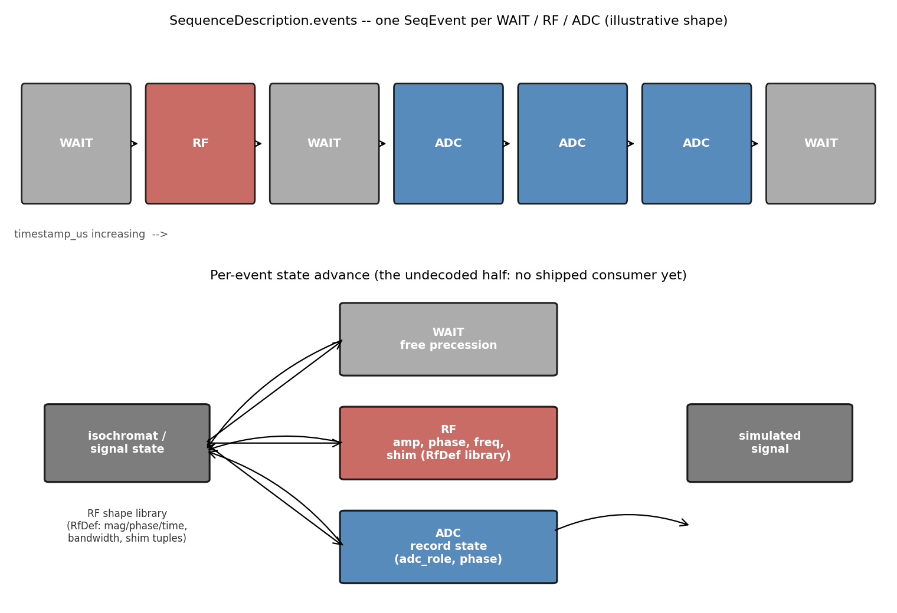
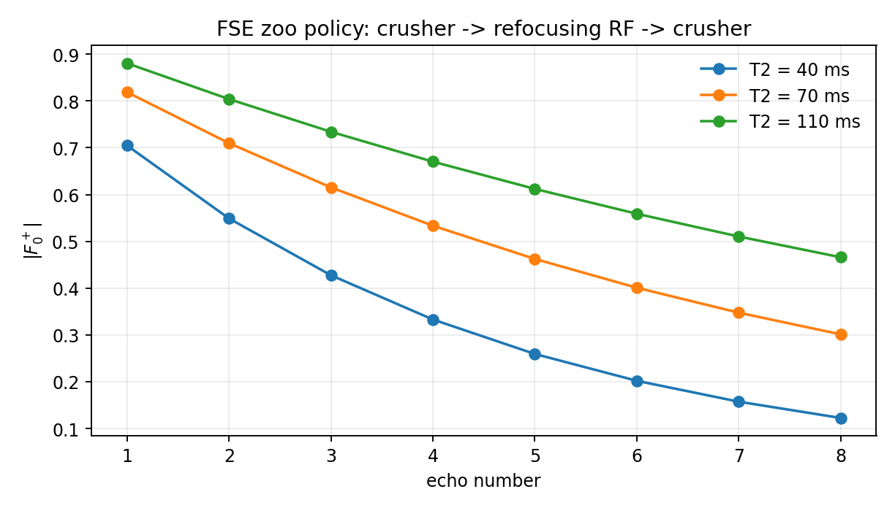
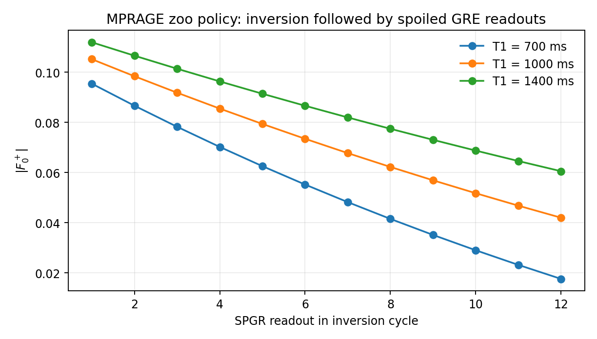
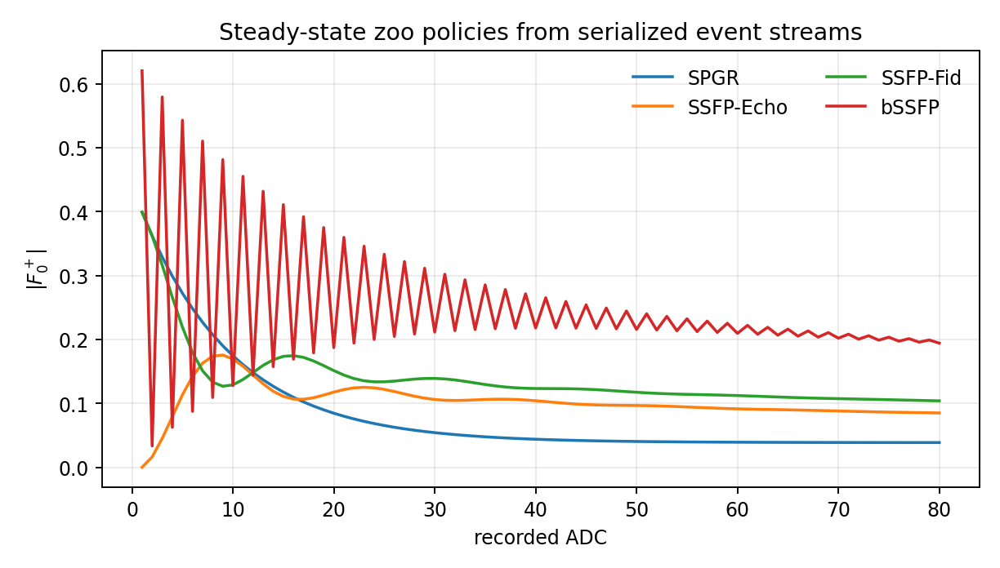

Sequence description and the state-machine simulator extension#
TRAJECTORY (Pulseq enrichment and automatic trajectory calculation) answers “where in k-space is this sample.”
It does not answer “what was the magnetisation state when it was acquired” —
that needs the RF history, not just the gradient history. SEQDESC is the
second, independent cache section that carries exactly that: a compact event
list plus an RF shape library, small enough to ship in full rather than
sampled.
Why an event list instead of a sampled waveform#
A sampled RF/gradient waveform at the raster is precise but large, and most
of it is redundant with information the cache already has elsewhere (block
definitions, instance tables). SEQDESC instead stores, per subsequence
(SequenceDescription in cxx/recon/trajectory_cache_reader.h, emitted by
csrc/src/structure/pulseg_seqdesc.c):
events— oneSeqEventper WAIT, RF or ADC occurrence, each a type tag, atimestamp_us, and up to sevenparams: for RF, the definition id, RF use, actual amplitude, phase offset, frequency offset, shim id and slice-select gradient amplitude; for ADC, the role (single echo, echo centre, non-centre, non-acquired), phase offset, and the independentechoflag.rf_defs— a per-subsequence RF-definition library (RfDef): each entry’s bandwidth, multi-band frequency offsets, total \(B_1^2\) power, and its magnitude/phase/time samples, still delta-RLE compressed exactly asSEQDESCstores them.rf_shape_tuples— deduplicated (definition, shim, slice-select gradient) triplets, carrying the derived slice thickness and a slice-selectivity flag, so a consumer does not have to re-derive slice geometry from bandwidth and gradient amplitude itself.
This is the same economy of representation as everywhere else in the stack: an event references a definition by id rather than re-embedding its shape, so the list scales with the number of RF/ADC/wait occurrences in one subsequence, not with the scan’s sample count.
Custom Waveform types: how it travels#
SEQDESC is not a new ISMRMRD message type. It is emitted as custom
ISMRMRD::Waveform payloads, alongside the session’s ordinary metadata, by
four dedicated builders in
cxx/recon/trajectory_cache_reader.h: make_seqdesc_header_waveform,
make_seqdesc_events_waveform, make_seqdesc_rf_shapes_waveform and
make_seqdesc_shims_waveform. Reusing the Waveform payload type — rather
than inventing a new ISMRMRD message — means any receiver already able to
read physiological waveforms can carry SEQDESC through unmodified; only a
handler that wants to interpret the payload needs to know its schema, and
that handler must treat it as versioned sequence-description data, not as
physiological samples (add_waveform_information tags each waveform so the
two are never confused on the wire).
The Python consumer#
The consumer deliberately has two layers:
decode_sequence_description(waveforms)validates and decodes waveform IDs 999 (header), 1000 (events), 1002 (RF shapes), and 1005 (shims). Unrelated waveforms, such as physiological traces, are ignored.A sequence policy interprets the physics implicit in the zoo sequence class. The common walker handles event timing, relaxation, B0, B1, RF shape integration, receiver phase, and ADC recording through TorchSim’s EPG operators.
This separation means ETL, flip angles, RF phases, and TR timing come from the state machine. The consumer supplies only the compact rule implied by the sequence class.
{kind=link}

Zoo policies#
Sequence class |
State-machine interpretation |
|---|---|
FSE |
Every refocusing RF means |
SPGR |
ADC records the state, then transverse states are ideally spoiled. |
SSFP-Echo |
A crusher/dephasing shift is applied immediately before ADC. |
SSFP-Fid |
ADC records first, then a crusher shift is applied. |
bSSFP |
RF and ADC are interpreted without an attached crusher. |
The rules are available as FSE, SPGR, SSFPEcho, SSFPFID, and BSSFP,
or through make_interpreter("fse") and the other lowercase names.
import numpy as np
from pulserver.recon.simulation import (
TissueProperties,
decode_sequence_description,
simulate_subspace,
)
resources = decode_sequence_description(waveforms_from_livesdk)
description = resources.subsequence(0)
subspace = simulate_subspace(
description,
"fse",
TissueProperties(
t1_ms=np.linspace(500, 1800, 40),
t2_ms=np.linspace(30, 160, 40),
),
rank=6,
record="all",
)
basis = subspace.basis
The simulator batches the tissue dictionary over TorchSim locations and uses
torch.linalg.svd for the temporal basis, so the same call can run on CPU or
CUDA.
Record every ADC or echoes only#
ADC params[2] is the independent boolean echo attribute. The producer sets
it when at least one real scan-table instance of that ADC position reaches
approximately (kx, ky, kz) = (0, 0, 0). This is an existential reduction:
it says that the event position can be an echo, not that every occurrence is
at k-space centre.
This distinction is particularly visible in MPRAGE and FSE:
A Cartesian MPRAGE inversion cycle contains several SPGR readouts. Normally only the readout assigned the central phase-encoding position is marked as an echo; its position in the train is selected by the desired TI.
A Cartesian FSE train contains several spin echoes. Normally only the echo assigned the central phase-encoding position is marked; echo ordering places it at the desired effective TE.
With a radial readout that crosses k-space centre, or a centre-out spiral, every MPRAGE SPGR shot or FSE echo reaches k-space centre. All corresponding ADC positions are therefore marked as echoes.
ZERO_VAR still constructs the virtual canonical TR used by prescan by
forcing every variable gradient to zero, whether or not that amplitude occurs
in the acquired schedule. It continues to define the existing canonical ADC
timestamp and role. The new analyzer integrates actual gradient instances and
uses the canonical path only as the numerical zero floor; the virtual
ZERO_VAR trajectory never counts as evidence that an acquired echo exists.
The recording modes serve different applications:
record="all"stores every ADC event, independent of k-space location. This is the default for subspace dictionary estimation.record="acquired"omits ADCs marked non-acquired/navigation by the legacy role.record="echo"stores only events with the newechoattribute, which is useful for echo-based fitting.
Signal evolution#
The plots below are generated by docs/_bench/seqdesc_signal_plots.py through
the same public EPG policies.
{kind=link}

{kind=link}

{kind=link}
